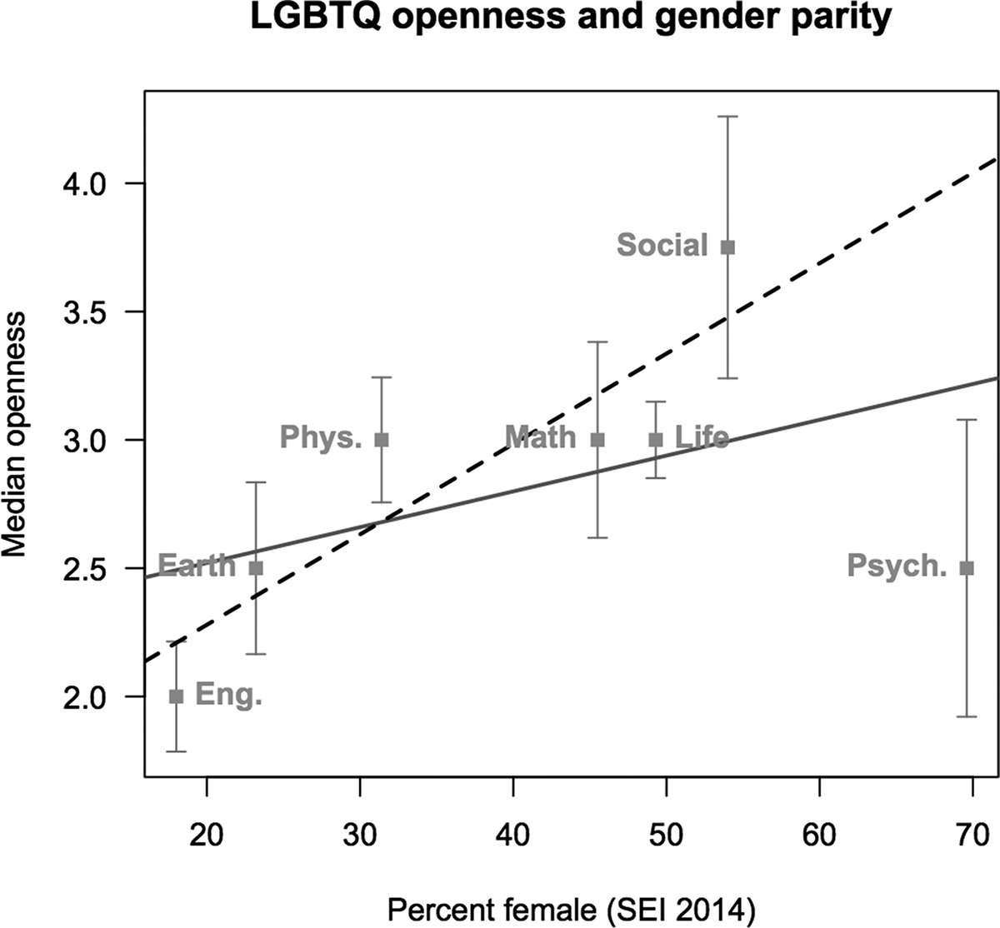
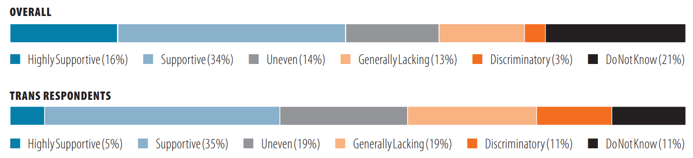
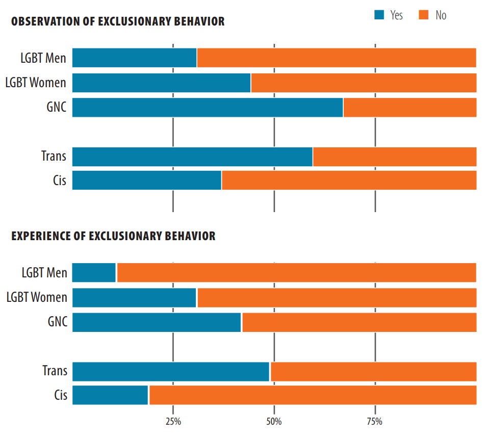

Studies on LGBT in STEM
One of the large problems with the visibility of LGBT individuals in STEM fields is the lack of studies done on the subject. While there are numerous articles on minorities such as women or racial minorities in scientific fields, there is very limited information available on LGBT individuals in these fields.
So far, I have only be able to find 4 studies on the matter: American Physics Society LGBT Climate in Physics Report, Engineering Deans' Support for LGBTQ Inclusion, "Don't ASk, Don't Tell": The Academic Climate for Lesbian, Gay, Bisexual, and Transgender Faculty in Science and Engineering", and Queer in STEM: Workplace Experiences Reported in a National Survey of LGBTQA Individuals in Science, Technology, Engineering, and Mathematics Careers. Few of these studies are as comprehensive as desired. The American Physics Society only surveys physicists, a relatively small group in STEM fields. The Queer in STEM article was based on an on-line survey for LGBT STEM individuals. Since it was a survey that individuals had to actively seek out and find, there is a large response bias. This group has had another survey more recently, but has yet to publish the results. One thing of note is that the National Science Foundation approved a $300K grant in 2015, which is a movement in the right direction.
The results of these surveys were quite shocking, to say the least. Around 40% of LGBT individuals in these fields reported being the closet to their coworkers. Over 1/3 of LGBT individuals who responded to the APS survey felt so uncomfortable in their work environment they considered leaving. As shown in the graph on the right, the Queer in STEM study looked at acceptance of LGBT individuals compared to their department and found a correlation between the percent female and the level of outness, with engineering having both the smallest percentage of females and the most closeted. One exception was the psychology field, since although it has a higher percentage of females, tends to be very closeted.
The APS survey gives similar results. In looking at the level of support at one's workplace or campus, only 50% were supportive or highly supportive of LGBTQ individuals, and 40% for trans individuals. This seems quite unacceptable, with only 50% of all LGBTQ physicists feeling like they can be supported and comfortable in their work place. There are also a large number of observed and experienced exclusionary behavior, with almost 50% of trans individuals experiencing such behavior. Over 25% of LGBTQ women and Gender nonconforming individuals also reported experiencing exclusionary behavior. While this is more specific to physicists since this study was made by the American Physics Society, it demonstrates how bad STEM careers really are. Since physical scientists are more out to their colleagues than their engineering or earth sciences peers, one can only image how much worse these departments would be. 